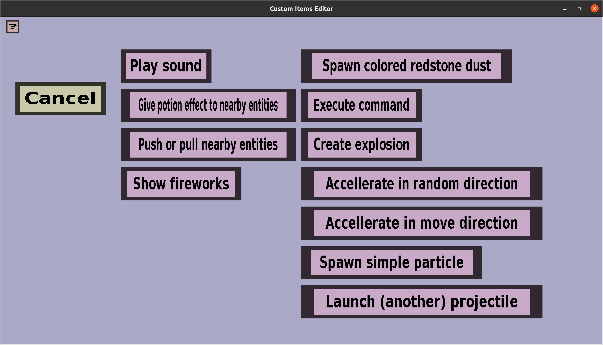

The effect creation menu can be used to choose what kind of projectile effect you would
like to add to a list of projectile effects.
It should look like this:

It has a 'Cancel' button and a button for every type of projectile effect you can create.
Clicking on the 'Cancel' button will take you back to the effect overview
you came from, without adding a new projectile effect to it.
Clicking on any of the effect type buttons will bring you to its corresponding edit menu.
I will give a brief description of each below:
-
'Play sound' will play a minecraft sound of your choice as the
position of the projectile. The corresponding edit menu is the
play sound effect edit menu.
-
'Give potion effect to nearby entities' will give potion effects
of your choice to nearby entities that are close enough to the
projectile (you can choose what close enough means).
The corresponding edit menu is the
potion aura edit menu.
-
'Push or pull nearby entities' will push nearby entities away from
the projectile or pull nearby entities towards the projectile. You
can choose whether to push or pull, how hard to push/pull and what
'nearby' means exactly. The corresponding edit menu is the
push/pull projectile effect menu.
-
'Show fireworks' will cause a firework explosion at the position of
the projectile. You can choose what type of firework, what colors,
and what effect. The corresponding edit menu is the
firework projectile effect menu.
-
'Spawn colored redstone dust' will spawn the redstone dust particle (or an alternative in later minecraft
versions) with a color of your choice. You can also configure how many should be spawned.
Since custom projectiles are invisible by default, you can use this to make it 'visible'.
The corresponding edit menu is the colored redstone edit menu.
-
'Execute command' will execute a command in name of the shooter of the projectile or the console.
If you execute the command in name of the shooter, you should make sure that all players have the
permissions to actually execute that command.
The corresponding edit menu is the command effect edit menu.
-
'Create explosion' will create an explosion at the position of the custom projectile.
The corresponding edit menu is the explosion effect edit menu.
-
'Accellerate in random direction' is a somewhat advanced effect. It will change the motion/velocity of
the custom projectile a little in a random direction, which can cause it to fly unpredictable.
The corresponding edit menu is the random accelleration effect edit menu.
-
'Accellerate in move direction' can increase or decrease the speed of the custom projectile during its
flight. This will not change its direction.
The corresponding edit menu is the straight accelleration effect edit menu.
-
'Spawn simple particle' will spawn one or more simple particles (you can only choose the type of the
particle, no additional properties for it) around the location of the custom projectile.
Since custom projectiles are invisible by default, you can use this to make it 'visible'.
The corresponding edit menu is the particles effect edit menu.
-
'Launch another projectile' will spawn another projectile at the location of the current custom
projectile. This can be used for instance for big projectiles that split into smaller ones.
The corresponding edit menu is the subprojectile effect edit menu.